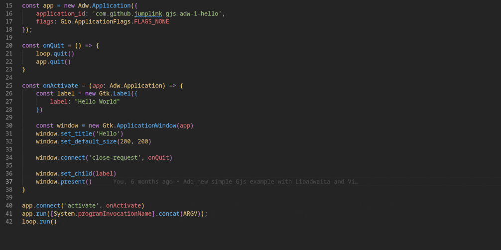

GIR API Documentation

TS for GIR


TypeScript type definition generator for GObject introspection GIR files

ts-for-gir is a robust TypeScript type definitions generator that improves the development experience of GJS projects. It has been completely rewritten over time to provide a more complete and accurate TypeScript representation of the GObject introspection interfaces. With ts-for-gir, developers can now benefit from TypeScript's strong typing and improved code navigation, making it easier to build robust and powerful applications with GJS.
Getting Started
Install the latest LTS version of Node.js. We recommend using NVM for this purpose. After Node.js has been installed, ts-for-gir can be executed with the following command:
npx @ts-for-gir/cli --help
That's it, you can start generating your types 👩💻☕
To generate TypeScript definitions for Gtk 4.0:
npx @ts-for-gir/cli generate Gtk-4.0
For detailed CLI options and advanced usage, see the CLI documentation.
Debug Generation Issues: If you encounter type generation problems, enable the reporter and use the analyze command:
npx @ts-for-gir/cli generate Gtk-4.0 --reporter
npx @ts-for-gir/cli analyze -f ./ts-for-gir-report.json
Showcase
- Audio Player - Play audio files
- Counters - Keep track of anything
- Ignition - Manage startup apps and scripts
- Learn 6502 - Learn program vintage Game Consoles
- Sound Recorder - A simple, modern sound recorder
- Sticky Notes - Pin notes to your desktop
- Weather - Show weather conditions and forecast
- K’uychi - Generate color palettes
Example Projects
The repository includes numerous example projects that demonstrate how to use the generated TypeScript definitions with various bundlers and libraries. These examples serve as great starting points for your own GJS applications.
Popular examples:
- GTK 4 Template with Vite - Modern UI with Vite bundling
- GTK 3 Browser - Web browser using WebKit
- Gio File Operations - File system operations with Gio
- GNOME TypeScript Template - A template for creating GNOME applications using GTK, libadwaita, TypeScript, Flatpak, and Meson
See the Examples directory for a complete list of examples with screenshots and detailed descriptions. For information on using the examples with different CLI options, refer to the CLI documentation.
NPM Packages
If you are only interested in the types and do not want to generate them yourself, you can use our pre-generated NPM packages. For example, if you want to develop a Gtk4 application with GJS, it is enough to install the corresponding NPM packages:
npm install @girs/gjs @girs/gtk-4.0 --save
import '@girs/gjs'
import '@girs/gjs/dom'
import '@girs/gtk-4.0'
import Gtk from 'gi://Gtk?version=4.0';
const button = new Gtk.Button();
All pre-generated NPM packages can be found on gjsify/types.
You want your or any other missing GObject introspection based library types to be published on NPM for every release? Then feel free to create an issue for it, we will be happy to include it.
Project Structure
ts-for-gir consists of several packages:
@ts-for-gir/cli- Command-line interface for generating TypeScript definitions and analyzing reports@gi.ts/parser- Parser for GObject Introspection XML files@ts-for-gir/lib- Core library for processing GIR data@ts-for-gir/reporter- Reporting system for problems and statistics with dependency injection@ts-for-gir/generator-typescript- TypeScript definition generator@ts-for-gir/generator-html-doc- HTML documentation generator (experimental)
Types submodules
This repo contains two Git submodules for pre-generated types:
types-dev(branchdev): used during local development. Scripts write generated packages here.types-release(branchmain): updated by the release workflow on tags.
Useful scripts:
yarn build:types # generates into ./types-dev
yarn build:types:release # generates into ./types-release
Further Information
- Examples - Detailed examples showing TypeScript with different bundlers
- CLI Documentation - Comprehensive guide to CLI options and features
- gjsify/types - Pre-generated NPM packages you can use directly
- GNOME Shell Extension Types - Hand-written type definitions for GNOME Shell Extensions